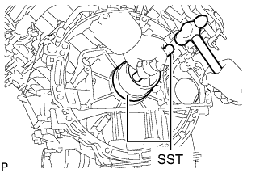
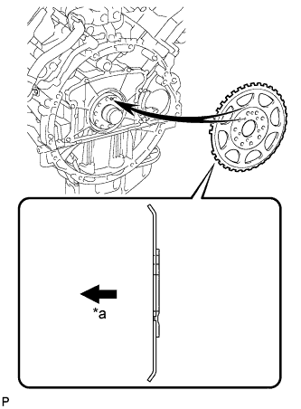
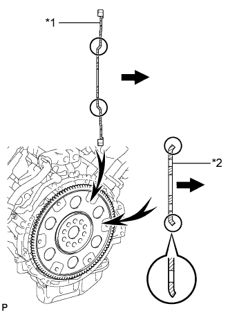
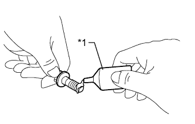
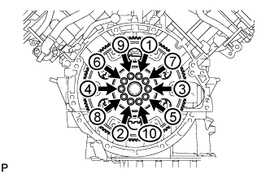

REAR CRANKSHAFT OIL SEAL > INSTALLATION |
| 1. INSTALL REAR CRANKSHAFT OIL SEAL |
Apply MP grease to the lip of a new rear crankshaft oil seal.
|  |
Using SST and a hammer, tap in the rear crankshaft oil seal until its surface is flush with the rear oil seal retainer edge.
| 2. INSTALL DRIVE PLATE AND RING GEAR SUB-ASSEMBLY |
Using SST, hold the crankshaft.
|  |
Install the crankshaft angle sensor rotor.
 | Engine Side |
|  |
Install the drive plate and ring gear and the rear drive plate spacer to the crankshaft.
| *1 | Drive Plate and Ring Gear |
| *2 | Rear Drive Plate Spacer |
| Transmission Side |
Install the drive plate and ring gear and bolts.
Clean the bolts and bolt holes.
|  |
Apply adhesive to 2 or 3 threads at the end of each of the 10 bolts.
| *1 | Adhesive |
|  |
Step 1:
Uniformly install and tighten the 10 new bolts in several steps in the sequence shown in the illustration.
Mark the top of each drive plate installation bolt with paint.
Step 2:
Tighten the drive plate installation bolts 90°.
Check that the painted marks are now at a 90° angle to the top.
| 3. INSTALL AUTOMATIC TRANSMISSION ASSEMBLY |
Install the automatic transmission assembly (Click here).